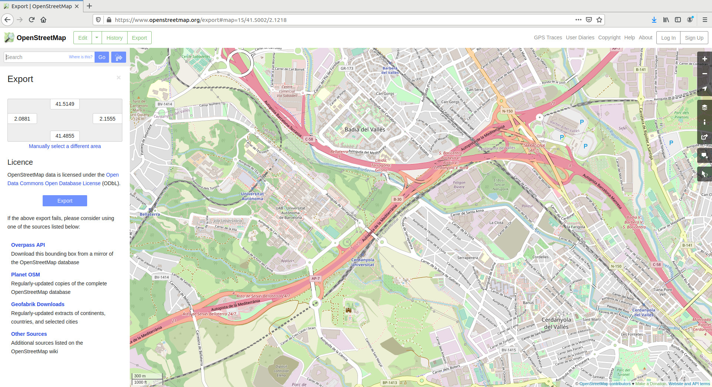
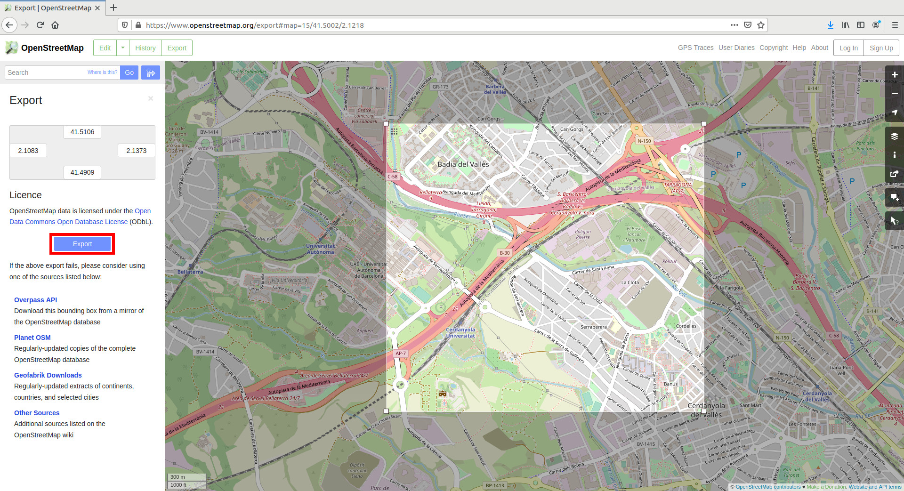

使用 OpenStreetMap 生成地图¶
在本指南中，您将学习：
- 如何从 OpenStreetMaps 导出地图。
- Carla 中可以使用的不同格式的地图以及每种格式的限制。
- 如何将本机
.osm格式转换为.xodr。 - 如何在
.xodr文件中包含交通灯信息。 - 如何在 Carla 模拟中运行最终地图。
OpenStreetMap 是由数千名贡献者开发的开放数据世界地图，并根据Open Data Commons Open Database License 获得许可。地图的各个部分可以导出为 XML 格式的.osm文件。Carla 可以将此文件转换为 OpenDRIVE 格式并使用 OpenDRIVE Standalone Mode 导入它。
使用 OpenStreetMap 导出地图 ¶
本节介绍如何从 Open Street Map 导出所需的地图信息：
1. 导航至 Open Street Map 网站 。您将在窗口右侧看到地图视图和一个面板，您可以在其中配置不同的地图图层、查询不同的要素、切换图例等。
2. 搜索您想要的位置并放大到特定区域。

!!! 笔记 如果您想使用大范围的地图，例如巴黎，您可以考虑使用 Carla 的 大地图功能 。
3. 单击窗口左上角的“导出( Export )”以打开“导出(Export)”面板。
4. 单击“导出”面板中的“_手动_选择不同区域”。
5. 通过拖动视口中方形区域的角来选择自定义区域。
6. 单击导出面板中的 导出 按钮，将所选区域的地图信息保存为.osm文件。

在 Carla 中使用 OpenStreetMaps ¶
开放街道地图数据可以通过三种不同的方法在 Carla 中使用。您使用的方法取决于数据是否为原始格式，或者您是否使用以下部分中说明的转换方法来转换.osm文件。.osm保留文件是最受限制的方法，因为它不允许自定义设置。
可用 .xodr 格式选项：
- 在您自己的脚本中生成地图。 该方法允许参数化。
- 将文件作为参数传递给 Carla 的
config.py。 此方法不允许参数化。
可用 .osm 格式选项：
- 将文件作为参数传递给 Carla 的
config.py。 此方法不允许参数化。
以下部分将提供有关上面列出的选项的更多详细信息。
将 OpenStreetMap 格式转换为 OpenDRIVE 格式 ¶
本节演示如何使用 Python API 将我们在上一节中导出的 .osm 文件转换为.xodr格式，以便可以在 Carla 中使用。
carla.Osm2OdrSettings类用于配置转换设置，例如偏移值、交通灯生成、原点坐标等。可配置参数的完整列表可以在 Python API 文档 中找到。carla.Osm2Odr 类使用这些设置来解析.osm数据并以 .xodr 格式输出。
在 Windows 中，.osm文件必须编码为UTF-8. 这在 Linux 中是不必要的。以下是示例代码片段，显示如何根据您的操作系统执行文件转换：
Linux ¶
# 读取 .osm 数据
f = open("path/to/osm/file", 'r')
osm_data = f.read()
f.close()
# 定义想要的设置。在该案例中为默认值。values.
settings = carla.Osm2OdrSettings()
# 设置导出到 OpenDRIVE 的 OSM 道路类型。
settings.set_osm_way_types(["motorway", "motorway_link", "trunk", "trunk_link", "primary", "primary_link", "secondary", "secondary_link", "tertiary", "tertiary_link", "unclassified", "residential"])
# 转为 .xodr
xodr_data = carla.Osm2Odr.convert(osm_data, settings)
# 保存为 opendrive 文件
f = open("path/to/output/file", 'w')
f.write(xodr_data)
f.close()
Windows ¶
import io
# 读取 .osm 数据
f = io.open("test", mode="r", encoding="utf-8")
osm_data = f.read()
f.close()
# 定义想要的设置。在该案例中为默认值。
settings = carla.Osm2OdrSettings()
# 设置导出成 OpenDRIVE 的 OSM 道路类型
settings.set_osm_way_types(["motorway", "motorway_link", "trunk", "trunk_link", "primary", "primary_link", "secondary", "secondary_link", "tertiary", "tertiary_link", "unclassified", "residential"])
# 转为 .xodr
xodr_data = carla.Osm2Odr.convert(osm_data, settings)
# 保存成 opendrive 文件
f = open("path/to/output/file", 'w')
f.write(xodr_data)
f.close()
生成交通灯 ¶
Open Street Map 数据可以定义哪些路口受交通灯控制。要在 Carla 中使用此交通灯数据，您需要在将.osm文件转换为.xodr格式之前通过 Python API 在 OSM 地图设置中启用它：
# 定义想要的设置。在该案例中为默认值。
settings = carla.Osm2OdrSettings()
# 启用从 OSM 数据中生成交通灯
settings.generate_traffic_lights = True
# 转为 .xodr
xodr_data = carla.Osm2Odr.convert(osm_data, settings)
交通灯数据质量可能因提取数据的区域而异。一些交通灯信息可能完全丢失。要克服这些限制，您可以使用 Python API 将所有路口配置为由交通灯控制：
settings.all_junctions_with_traffic_lights = True
您还可以排除某些道路（例如高速公路链接）生成交通信号灯：
settings.set_traffic_light_excluded_way_types(["motorway_link"])
导入 Carla ¶
本节介绍如何使用可用的不同选项，通过 OpenDRIVE 独立模式将 Open Street Map 信息提取到 Carla 中。
有以下三个选项可供选择：
A) 使用您自己的自定义 Python 脚本中的转换 .xodr 文件 生成地图该方法允许参数化。
B) 将转换后的.xodr文件作为参数传递给 Carla config.py 脚本。此方法不允许参数化。
C) 将原始.osm文件作为参数传递给 Carla config.py 脚本。此方法不允许参数化。
A) 使用您自己的脚本¶
生成新地图并阻止模拟，直到通过调用 client.generate_opendrive_world() 准备就绪。使用carla.OpendriveGenerationParameters类配置网格生成。请参阅下面的示例：
vertex_distance = 2.0 # 以米为单位
max_road_length = 500.0 # 以米为单位
wall_height = 0.0 # 以米为单位
extra_width = 0.6 # 以米为单位
world = client.generate_opendrive_world(
xodr_xml, carla.OpendriveGenerationParameters(
vertex_distance=vertex_distance,
max_road_length=max_road_length,
wall_height=wall_height,
additional_width=extra_width,
smooth_junctions=True,
enable_mesh_visibility=True))
!!! 笔记
强烈推荐wall_height = 0.0。OpenStreetMap 将相反方向的车道定义为不同的道路。如果生成墙壁，这将导致墙壁重叠和意外的碰撞。
B) 将 .xodr 传递给 config.py¶
启动 Carla 服务器后，在单独的终端中运行以下命令来加载 Open Street Map：
cd PythonAPI/util
python3 config.py -x=/path/to/xodr/file
将使用 默认参数 。
C) 将 .osm 传递给 config.py¶
启动 Carla 服务器后，在单独的终端中运行以下命令来加载 Open Street Map：
cd PythonAPI/util
python3 config.py --osm-path=/path/to/OSM/file
将使用默认参数。
无论使用哪种方法，地图都将被导入到 Carla 中，结果应类似于下图：
!!! 警告
生成的道路在地图的边界处突然结束。当车辆无法找到下一个路径点时，这将导致交通管理器崩溃。为了避免这种情况，交通管理器中的 OSM 模式默认设置为True ( set_osm_mode() )。这将在必要时显示警告并销毁车辆。
与此主题相关的任何问题和疑问都可以在 Carla 论坛中发布。